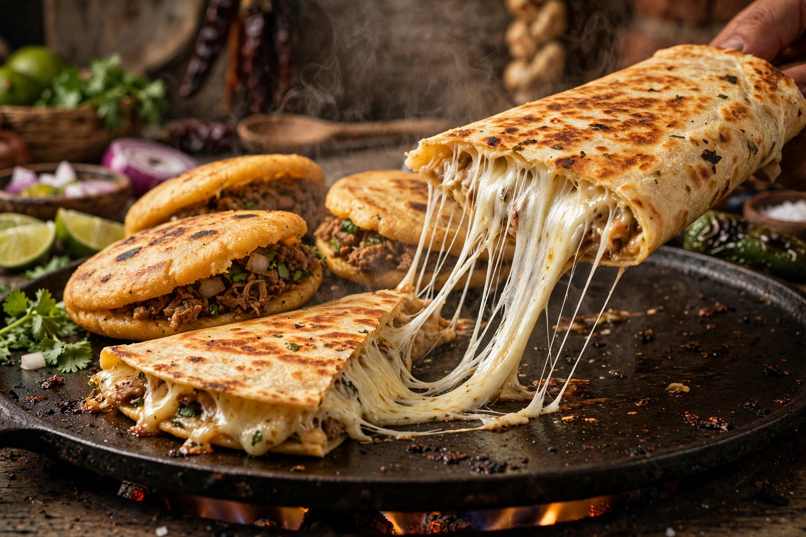

Pizarrón del día • Fogón activo
El menú
Todo hecho al momento. Precios en caja.
Salsas verde y roja hechas a mano todos los días con ingredientes orgánicos.

Receta de la casa
Masa crujiente y queso hebra chiapaneco
Gorditas infladas al comal y megaquesadillas con queso fundido. Pídelas como las pidas: siempre salen humeando.
El picómetro
1Verde · TomatilloSuave
2Roja · AsadaMedio
Cilantro, cebolla y limones sin límite
Tacos
Acompañados siempre con limones, cebollitas y salsas verde y roja hechas a mano.
PastorAdobado tradicional con piña, cilantro y cebolla— (Pregunta en caja)
BistecCarne suave asada al momento— (Pregunta en caja)
ArracheraMarinada al carbón con cebollitas— (Pregunta en caja)
ChorizoAl comal, con su grasita de sabor— (Pregunta en caja)
CampechanaLa clásica combinación de carnes— (Pregunta en caja)
Vegetarianos: NopalAsado al comal— (Pregunta en caja)
Vegetarianos: QuesoFundido en tortilla de maíz— (Pregunta en caja)
Carnitas al estilo único
Servidas con tortillas calientes de comal y guarnición de la casa.
Por kilo— (Pregunta en caja)
1/2 kilo— (Pregunta en caja)
1/4 de kilo— (Pregunta en caja)
Gorditas
Gorditas rellenas de guisado artesanal, infladas al comal.
Gordita de guisadoRellena de guisado artesanal del día— (Pregunta en caja)
Megaquesadillas
Megaquesadilla con queso fundido y carne a elegir.
MegaquesadillaQueso fundido + carne a elegir— (Pregunta en caja)
Para tomar
Lo fresco para acompañar.
Aguas frescasDe sabor natural, del día— (Pregunta en caja)
Refrescos tradicionales— (Pregunta en caja)
Cervezas nacionales— (Pregunta en caja)